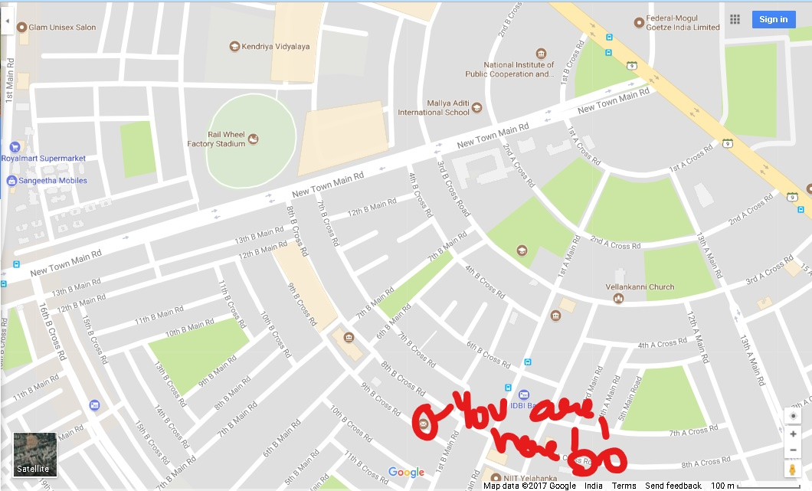

RIDDLE 1
NAME: Mr. Surya Raj
AGE: 30
REASON OF DEATH:Stabbed with a knife with letters in between the man and knife
KILLER: Joseph Diablo
EVIDENCE: Sign on the letter made by the murderer.
INFORMATION:Victim was a postman who killed a woman just by writing letters to her. The killer behind all these murders were confirmed were Joseph. The reason was a mystery.
RIDDLE 2: I lie in the NOSE of the incidents where I wait for life to come and this is where there is flow of INCOME.

MARK URSELF FOR I SHALL WRITE YOUR FATE